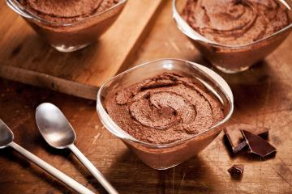

Mousse de Chocolate

Receita de mousse de chocolate simples leva apenas 4 ingredientes que é simplesmente uma delícia
Ingredientes:
2 latas de creme de leite
1 lata de leite condensado
1 pacote de gelatina em pó sem sabor
8 colheres ou a seu gosto de chocolate em pó, achocolatado ou outro de sua preferência, fica bom com qualquer um
Modo de Preparo
- Coloque no liquidificador o creme de leite, o leite condensado e o chocolate em pó.
- Bata por aproximadamente 2 minutos
- Derreta a gelatina conforme instruções da embalagem e acrescente a mistura, bata por 30 segundos só para misturar.
- Coloque em um recipiente, cubra e leve à geladeira até endurecer.
Agora que você já sabe como fazer mousse de chocolate!